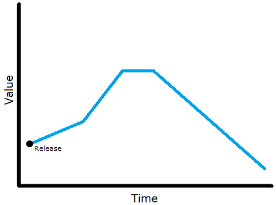
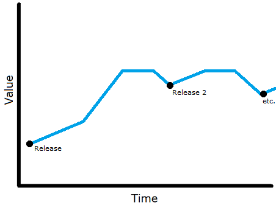
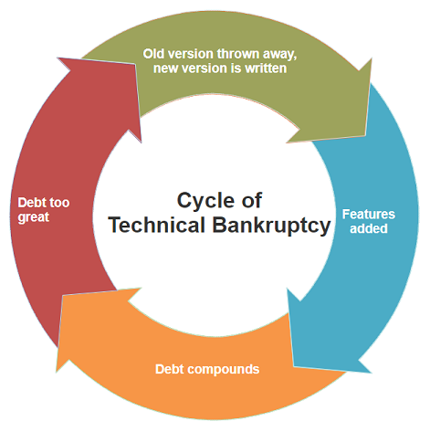

Product Lifecycle Requirements
As projects begin, develop, and mature, they eventually blossom into full-fledged products. Along the way, there are several important steps to take that help ensure the product turns out solid. Too frequently ignored, however, is the follow-through once the product has matured. Continuing to manage the lifecycle of a product, even once it’s “done”, is just as important to its quality, and often the quality-of-life of your team as well.
Table of Contents
Looking for the TL;DR? Here are some shortcuts to common reference sections:
- Product Versioning Requirements
- Support and Maintenance Checklist
- Documentation Requirements
- Product Evolution Requirements
Full Table of Contents:
Lifecycle != SDLC
While this document deals with the lifecycle of products at ATLAS, it is not a replacement for an understanding of Systems/Software Development Lifecycle (SDLC) approaches. It also does not prescribe an approach. Instead, it addresses how the company in particular develops and maintains its products. These requirements should be applicable to any SDLC process.
This distinction is made because SDLC is a loaded term. Sometimes it can refer generically to any lifecycle approach, but often it refers to a very particular process that heavily promotes waterfall development. ATLAS is not a waterfall shop, and many aspects of the colloquial SDLC methodology don’t fit well. As a result, the term “SDLC” will be avoided from here.
What is a Product?
It’s easy to look at the front-end applications, which receive all the marketing and sales focus, and call those the products. From a business and sales perspective, that’s probably true. Those are the products of the company. Engineering, however, has many more products than just those SKUs.
This document uses the term product frequently and loosely, but what is a product? Within the context of these requirements, basically everything is a product. They apply to all efforts. While the “productness” of some sub-modules or parts of larger applications might be debatable, assume that these requirements apply when in doubt.
The Structure of this Document
These requirements are broken into three major categories that encapsulate most of a product’s lifecycle. The first section is about the operation of the product, specifically around managing the initial effort, ongoing development, and its relationship with its users throughout. The second section details matters of responsibility, accountability, and ownership of the product as it relates to the support and maintenance from both a business and technical level. Finally, the last section covers the growth, innovation, and upkeep of products–how they’re kept from stagnation and how technical debt is paid off.
Reading the Requirements
When interpreting the verbiage of the requirements, know that it was inspired by RFC 2119. As a quick reference, requirements using must, shall, must not, and shall not are absolute. Should, should not, recommended, and not recommended are strongly encouraged but there may exist valid reasons to avoid them. May, may not, and optional are optional, but acknowledged as part of the problem space.
In all cases, the letter of the item is less important than the spirit. Reach out to team leadership if there are questions around interpretation. Similarly, no matter how absolute the requirement in this document, nothing overrides the fact that business must continue to operate. These requirements are a tool to assist in cooperation and ongoing value-creation for our customers; they are not a book with which to beat others.
Versioning and Operation Lifecycle
The versioning and operational requirements laid down in this document are bisected into the categories of versioned products and rolling products. Neither of them necessarily reflect anything about the development or release methodology of the product itself, though obviously some practices tend in one direction or the other. Instead, the focus is on the two different sets of expectations that consumers of the products harbor. The requirements are guided by these expectations, and differ as a result.
ATLAS uses a versioned approach most often for technical modules like code libraries, containers, and (rarely) some APIs. These are strongly versioned to provide a contract to their consumers. The contract serves as an interface guarantee; a statement that the product at version a.b.c does exactly what it does the same way every time, while version x.y.z may behave differently.
On the other hand, ATLAS usually relies on a rolling approach for its front-end, customer-facing software. Here, the contract between developer and consumer is much softer. It’s implied that in exchange for a live, hassle-free stream of updates, users receive new versions automatically and regularly–usually without their explicit consent or action. These products still have versions, of course, but the version is not part of that developer/consumer contract. Instead, there is an understanding that the developers will do their due diligence to ensure smooth transitions between releases, since users cannot opt out.
There are certainly crossovers between these domains. However, the important part is keeping in mind the consumer’s expectations. One must design these into the product, as they will heavily affect its lifecycle.
Public Version vs. Internal Version
It’s important to note that there is a clear distinction between the consumer-facing (“public”) version number of a product and its internal version as the development team knows it. No matter the approach, the internal version of a product must always uniquely represent a specific build of it–or, more accurately, a reproducible point-in-time instance of it. The public version of the product may be the same as the internal version, but rarely will. The requirements in this document almost exclusively cover public versions.
The public version number of the product is representative of its feature set rather than any given point-in-time instance. Rolling products must not have a prominent public version number. As discussed in later sections, the public version number is tied to a particular release rather than a build instance, and always requires a developer’s hand to maintain the contract implied by the version number. For example, if a product follows Semantic Versioning, there is meaning behind each part of the version number that must be upheld.
There’s another version indicator that can exist as well: a marketing version number. Using Windows as an example, Windows 10 is not (internally or externally) version 10.x.y.z of the OS software. The 10 is just part of the marketing. These indicators are of little concern to the development team, though there are a few considerations.
Choosing Versioned or Rolling
When starting a new project, choosing the operational lifecycle strategy is key to developing and maintaining it successfully. Making this decision can be challenging, but there are a few guidelines to help.
Versioned:
- ➕ Creates a stable interface for consumers to rely on
- ➕ Gives the dev team an easy path to introduce breaking changes when necessary
- ➕ Allows clear communication around support windows
- ➖ Tends to slow the pace of releases
- ➖ Tends to stagnate consumers
- Consumers will not upgrade unless they are forced or convinced
- Forcing consumers to upgrade should come with a clear communication of deprecation to all consumers, a generous timeline for them to switch, and (for critical products) an out-of-band window to support those that cannot or will not upgrade.
- Convincing them requires publishing detailed change notes and, sometimes, marketing and promoting the new version (even internally)
- ➖ Can be a burden on maintenance
- Depending on the users of the product and your relationship with them, you may be forced to support many versions simultaneously
- ➖ Disadvantageous for service-oriented products
Some products are inherently versioned. Code libraries are a prime example. Organizations occasionally hybridize the two approaches–for example, automatically releasing nightly “unstable” versions or only making the latest version available–but the product is still consumed at a specific version. The consumer usually still has to seek out and upgrade versions themselves, and in those scenarios most consumers are encouraged to wait for full releases. Even versioned products with auto-updaters are still versioned.
Rolling:
- ➕ Allows for an uninterrupted flow of new features to consumers
- ➕ Smaller, non-breaking bug fixes can be applied as needed, enabling prompt resolution of issues
- ➕ Only a single “live” version to worry about
- ➕ Tends to accelerate the pace of releases
- ➖ Communication around support windows lacks clear points of delineation
- ➖ A deft approach to change is required from developers
- Since there is no ability to opt-in or opt-out of changes, any planned breaking change must be clearly communicated to all consumers
- They must be given a generous timeline to adapt, sometimes requiring training
- Every upgrade, enhancement, new feature, and regression goes live for all consumers
- This necessitates a more thorough testing methodology and more careful design–not necessarily bad things, but certainly time-sinks
- Leads to strategies such as blue/green deployments; these strategies add complexity and overhead
- It often leads to strange workarounds to avoid introducing breaking changes alongside new functionality
- These workarounds/hacks more easily become permanent, due to the lack of clear delineation around support windows, which can eventually (if unmanaged) create large amounts of technical debt
- Since there is no ability to opt-in or opt-out of changes, any planned breaking change must be clearly communicated to all consumers
- ➖ Tends to increase burden on support teams/documentation
- Consumers are likely to find themselves left behind if they step away from your product for a time
- Even consistently engaged users are more likely to miss new functionality without strong update communication
- ➖ Cannot cleanly apply to some product types
Most SaaS products (including web applications) use a rolling model. Even their APIs are rolling, though often they’re hybridized. In the common hybrid model, the consumer declares a version in their request to specify the desired functionality and compatibility. However, they’re still forced to use the current interface; the version request is a function of the software rather than a fundamental part of the contract. It’s an inversion of control; the user must ask to be allowed to tap into compatibility with old versions, rather than the user driving which version is used and the developer trying to shepherd them forward.
Versioned Products
During Design
- The intended consumer audience for the product must be set.
- Remember: a consumer might be a customer user, an internal user, or even another development group. No matter who the audience is, treat them as your consumer.
- Consumer expectations for lifecycle must be defined.
- If you’re here, you’ve probably already done this.
- The release mechanism must be established.
- How will consumers get new versions?
- SLAs around support must be quantified.
- What expectations should be set around how long a given version will be supported?
- What is the plan for enterprise-level support of out-of-band versions (if applicable)?
- Versioning rules for the product must be declared.
- Either they are defined in the design, or a reference is provided to the standard scheme used.
- One should strongly prefer Semantic Versioning over other schemes.
- No matter the versioning scheme chosen, it must meet these criteria:
- Some indicator of major version and minor version must be available at a minimum.
- Further indicators, such as patch numbers and tags to indicate development status (e.g.
3.0.4-beta), are allowed. - Additional indicators (patch numbers, etc.) must have their meaning and rules clearly defined in the design, especially as they relate to the major and minor version.
- Further indicators, such as patch numbers and tags to indicate development status (e.g.
- Incrementing the minor version must never introduce known breaking changes.
- Incrementing the major version should reset the minor version.
- In other words, the minor version should always be a subset of the major version.
- The version indicators must always be mathematically comparable first and lexically comparable second. The comparison must linearly indicate the release history of the product relative to other versions.
- This is to address a common error. Version
3.10must always be a later version than3.2when comparing version numbers–specifically, 8 minor versions later.
- This is to address a common error. Version
- Some indicator of major version and minor version must be available at a minimum.
During Initial Development
- The parties responsible and accountable for the product’s ongoing maintenance, development, and support must be established.
- Consumer-facing versioning is not important during initial development until the product is made available to consumers for the first time.
- Expectations should be set that the “interface contract” does not begin until the product’s initial full release.
- To clarify, in-development versions are likely to have breaking changes constantly.
- However, the responsibility is on the developers to ensure that whatever version consumers are likely to take dependencies on is the initial full release.
- In other words, don’t hand consumers a mostly-functional version of the product and expect them to not start relying on it, no matter what the version number is. It’s on you, the developer, to manage expectations.
- Internal versioning begins ASAP during initial development.
- The internal version indicator should not be prominently visible publicly.
- It must always be possible for maintainers/supporters to discover the internal version of the product in the wild (e.g. once deployed or installed somewhere).
- It is strongly encouraged to use a different versioning scheme for internal versions. Prefer ones that include a temporal element.
Upon Initial Release
- The initial release shall be version 1.0 (or equivalent in your scheme).
- The full interface contract is now in effect.
- Version indicators must now fully adhere to the versioning rules laid out in the design, including the initial release.
Subsequent Versions
- Changes in ownership of the ongoing support and maintenance must be continually well documented, and that ownership must always be clearly defined.
- Release versions shall be a concern of the release pipeline/process, and shall always reflect the consumer-facing (“public”) version indicator.
- No system shall automatically increment the major version of a product.
- Build systems shall not increment the major or minor version of a product. Only release processes can affect them.
- These requirements are in place to convey the meaning behind the version. No automated system is capable of determining what the versioning of the next iteration of the product should be. However, it is acceptable for a release system to, by default, increment a minor version.
- It should not be possible for a release to be created that generates an out-of-sequence, historically inaccurate, or repeat version number.
- All major and minor releases shall be communicated to consumers via appropriate means.
- New releases shall include change notes.
- These can be as simple as a summary of the whole update (“fixed bugs with loading report options”), or as complex as a full changelog.
- The format of these notes depends on the intended consumer of the product, but should tend toward being as informative as possible.
- Changing the versioning scheme for a product must occur only at new major versions. It is considered a breaking change.
- Major version releases should only be made when breaking changes are introduced.
- The development team shall support the entire current (latest) major version series.
- Example: if Product X is at version
3.4.1and a consumer using version3.1.8finds a bug, this is a valid issue and must be supported. - Note that “support” does not mean that a special version
3.1.8-fixshould be created. If the issue is already fixed in a later release, it is valid to ask the consumer to upgrade. If the issue still exists in the most recent release, it is valid to fix it in a future release.
- Example: if Product X is at version
- The development team shall not make the immediately previous major version series of the product unavailable.
- Example: Product X is at version
3.4.1. The team then releases version4.0.0. It cannot make the3.*.*series of the product unavailable. It could take the2.*.*series offline if necessary. - This requirement is in place to provide some level of security to consumers’ downstream dependent systems (e.g. build pipelines).
- Although the
3.*.*series is still available in this example, availability does not necessarily imply support (see below). - Versions prior to the initial release do not apply.
- There is one exception: when the software has ceased to function properly in uncorrectable ways outside of the dev team’s control, it may be made unavailable.
- Example: Product X is at version
- The development team shall support the most recent version of the immediately previous major version series of the product.
- For example, if the product is version
3.4and then4.0is released, version3.4must continue to be supported. Version3.3may go unsupported. When version5.0releases, support may end for3.4. - As deemed necessary by product leadership, this support can be sunset. Sunsetting the previous series is a double-edged sword:
- Setting a sunset date requires that support for the series continue through that date.
- This supersedes the requirement to only support the current and immediately previous series, so the team may end up supporting many series.
- A generous window must be given before end-of-life.
- Consumers must be notified of the sunset date using appropriate means.
- Setting a sunset date requires that support for the series continue through that date.
- For example, if the product is version
- The product team may choose to support more versions than the minimum outlined here. If so, the policy must be documented alongside the versioning scheme.
- Fixes should almost always be made against the latest series. Additions shall always be made against the latest series.
- It is strongly discouraged to branch the product into two actively maintained series (like how Python 2 and Python 3 worked until 2020).
- However, in some rare and unusual cases, the product’s leadership may choose to do this.
Discontinuing a Product
There is currently no set of requirements or guidelines for discontinuing a product. A process will need to be established before requirements can be created.
Rolling Products
These are often called “live” or “service” products, and they represent a vast majority of the software consumers use today.
During Design
- The intended consumer audience for the product must be set.
- Remember: a consumer might be a customer user, an internal user, or even another development group. No matter who the audience is, treat them as your consumer.
- Consumer expectations for lifecycle must be defined.
- If you’re here, you’ve probably already done this.
- The release mechanism must be established.
- How will consumers receive the live version?
- Any expectations or agreements around product features or interface details (especially relating to consumer design input, demands, legal agreements, or otherwise) must be well-documented so that future maintainers are aware.
- It should be decided what SLAs are needed around feature support and product/service availability.
- Since the consumers are not able to opt out of updating, features they may rely on must be protected by some kind of SLA, even if its only for internal accountability and confidence.
- Many rolling products are SaaS offerings; this implies that the product is only usable when the service is available and functioning as intended. Because of this, the product’s availability must be protected by some kind of SLA, even if its only for internal reference and confidence.
During Initial Development
- The parties responsible and accountable for the product’s ongoing maintenance and support must be established.
- A strategy for smoothly transitioning into breaking changes must be developed.
- Despite the rolling nature of the product, it is not valid to break functionality without ensuring minimal consumer disruption.
- This strategy includes:
- Software design accommodations for changing requirements (so that a transition plan can exist later)
- Communication plans
- How are consumers to learn of changes to the product?
- What are the impacts?
- What is the value for them?
- When is the change expected?
- An approach to gate delivery of features or changes, such as feature flags or blue/green deployments
- The dev team must have a plan for determining consumer acceptance (e.g. UAT).
- This is true for versioned products as well, but becomes especially important for rolling products in subsequent releases.
- A rolling product, when it must take dependencies, should prefer to take dependencies on versioned products.
- Versioned products provide a level of reliability that rolling products cannot. Depending on them allows your live rolling product to better isolate issues and remove variables during troubleshooting.
- Internal versioning begins ASAP during initial development.
- The internal version indicator should not be prominently visible publicly.
- It must always be possible for maintainers/supporters to discover the internal version of the live product.
- Rolling products are strongly encouraged to either include a temporal element in their internal version, or be able to easily track backwards into one.
- This is important to help establish a historical reference of versions that otherwise may not exist if, for example, the internal version is based entirely on an arbitrary incrementing ID.
Upon Initial Release
- The product shall not be referenced by a version indicator when communicating with consumers, with the exception of any marketing version applied to it.
- This includes technical consumers and internal (developer) consumers.
- This requirement exists to prevent internal versioning from becoming external versioning. Versioning a rolling product is a violation of its implicit contract with consumers and sets the wrong expectations with them.
- Changes, fixes, and feature additions can instead be referenced by release timeline or development milestone, depending on product leadership’s preference.
Subsequent Versions
- The development team must not introduce breaking changes without generous warning to consumers.
- For breaking changes, a transition plan must be developed to ensure as seamless an experience as possible.
- It should follow the strategy designed during initial development.
- Changes in ownership of the ongoing support and maintenance must be continually well documented, and that ownership must always be clearly defined.
- Changes to the consumers’ expectations of the product, agreements (legal or otherwise), and design input over time must be continually well documented.
- New releases containing new features, important fixes, or impactful changes shall coincide with change communication to the consumer.
- This can be as simple as a summary of the whole update (“fixed bugs with loading report options”), or as complex as a full changelog.
- The format of these notes depends on the intended consumer of the product, but should tend toward being as informative as possible.
- The team should continue to support deprecated features for a generous period of time.
- The window should be large enough that even consumers using the product in unintended ways, who act on elongated timelines, and who require some coercion are able to adapt before the feature goes away.
- Security issues are an exception; features found to suffer from a security vulnerability can be removed immediately as a result. If the feature was slated for removal anyway, it can remain absent. If not, it should be reintroduced once the issue has been addressed.
- One should still notify consumers when these changes are made.
- The team should track metrics around feature utilization, especially around features that are currently or will soon become deprecated.
- This data should be used to inform transition plans and better target enhancements.
- The team must continue to prioritize consumer acceptance (UAT) for each new release, especially those with new features.
- A strategy must exist for correcting when breaking regressions are accidentally introduced.
- Whatever the strategy, it must include a catch-all safety, such as a full rollback, that ensures the product becomes fully available in an accepted state again.
- This is because consumers do not have the ability to opt out of updates that happen to be non-functional; some guarantee of restoration of service is required.
- The development team must not provide differently-versioned instances of the same product.
- In other words, even if multiple instances of the product are live at a given time, all instances must be the same internal version.
- This only applies to production environments, of course.
- Exceptions to this can be made, but only by company leadership. Supporting multiple versions of a rolling product turns it into a versioned product (but without the positive attributes normally associated with them). Support and maintenance costs are an order of magnitude higher.
Discontinuing a Product
There is currently no set of requirements or guidelines for discontinuing a product. A process will need to be established before requirements can be created.
Responsibility, Accountability, and Ownership
A product’s lifecycle is about more than versioning new features and managing consumer expectations. The product must also be continually supported and maintained. It is not acceptable to have products that are unattended. Having a clear and complete understanding of who owns a product’s lifecycle and what that ownership entails is critical to its continued success.
| Responsibility vs. Accountability |
|---|
| It is important to differentiate between responsibility and accountability. The responsible party is the one tasked with the duty. The accountable party is the one held liable for the results. The two can be the same but aren’t necessarily so. |
Maintenance and Support Checklist
This section provides an easy checklist of maintenance and support questions that must be answered for every product. The answers to these questions must always be available in product documentation during all stages of its lifecycle. They help ensure everyone is aware of which team is responsible for the ongoing support and who is accountable for the product’s continued success. The responsible and accountable party can shift over time, but it must always be clearly defined.
Note that the separate pieces/services which make up a product may have separate answers to these questions. For example, a website product with a backing database might have one team monitoring the health of the site and another monitoring the health of the database. This is disadvantageous, but until a DevOps methodology is fully embraced, is sometimes required. Be sure that the separation is clearly denoted in documentation.
- Who is the product team?
- Who is the product owner?
- What roles make up the dev team and who is filling them?
- What other roles are dedicated to the product and who is assigned to them?
- Who is responsible/accountable for monitoring the product?
- Monitoring includes ensuring that the product is operating within acceptable parameters and meeting SLOs.
- It also includes proactive examination of metrics to anticipate future problems or concerns.
- Monitors are responsible for raising the alarm when the product deviates, or is forecasted to deviate, from its “green” state.
- Automated monitoring is encouraged, but a human must always be available–either alongside the auto-monitoring or “on call”–to ensure its signals are observed and reacted to.
- The objective of the monitoring effort is to help ensure that the product continues to meet business needs at the real-time level.
- Some product types require no monitoring, for example if they are statically-delivered and “packaged” applications, but this is becoming rare.
- Who is responsible/accountable for the customer support of the product?
- In other words, who engages with the consumers of the product around questions, issues, requests, and so on?
- This party must be assigned even when the consumer of the product is an internal audience.
- Who is responsible/accountable for the technical support of the product?
- In other words, who can answer technical questions about the workings of the product and its components?
- Who is responsible/accountable for the ongoing maintenance of the product infrastructure?
- These concerns include making sure database maintenance is performed, security patches are kept current, backups are valid and can be restored, log folders are cleaned, scaling is in line with demand, and so on.
- Who is responsible/accountable for the business alignment of the product?
- Almost always, this will be the product owner. The product owner will react to the business needs and express the alignment as stories and prioritization.
- Sometimes, a product owner does not exist. Even in this case, some party must be responsible for ensuring that the product moves forward and aligns with direction.
- The objective of this effort is to help ensure that the product continues to meet business objectives at a tactical and strategic level.
- Who is responsible/accountable for the technical upkeep and evolution (growth) of the product?
- The nature of entropy dictates that over time, all applications will decay unless they continue to evolve and, at minimum, keep up with their surrounding environment.
- This means that someone must be responsible for ensuring that the evolution of all supported products is represented in discussions around prioritization and value.
- Products left untouched for long periods of time accrue technical debt simply by existing. The knowledge necessary to support and maintain the product fades over time, and eventually even minor fixes become large efforts as the code must be relearned (often by someone new).
The Importance of Documentation
The original development team of a product will not always be its shepherds. Even if the product doesn’t change hands directly, the team itself will change over time. The only way to preserve the decisions made about the product–whether during initial design, original development, or as part of on-going growth–is to document them.
- There must be a centralized location for all documentation related to the product’s design and development.
- PMO-based documentation (project submissions, etc.) are encouraged to be located here as well but not required.
- Confidential legal artifacts, financial artifacts, and (hopefully a very rare scenario) tightly-held company secrets should not live here.
- Documentation shall cover technical and business decisions made, the operation of the product, dependencies, assumptions, and other intangibles.
- Product docs shall be available for any member of any development team within the company to view.
- This allows a cross-pollination of information, removes variables around security and access (which saves Ops time), and encourages a sharing of ideas and collaboration.
- It also saves time when the team responsible for the product changes.
- There is a window during the initial design of the product where documentation can be less widely available, to avoid exposing incorrect information. However, the docs should be made available ASAP.
- Secrets should not live in centralized documentation.
- This is especially true for passwords, authentication tokens, keys, and so on.
- Instead, secrets should live in a secret store (such as a key vault).
- Documents shall be allowed to evolve and change alongside the product as necessary.
- However, this evolution should happen within a change-tracked system, so that historical versions of documents can be retrieved.
- This requirement exists to ensure that knowledge-sharing documents are not encouraged to freeze and become outdated.
- An exception: documents which must freeze in order to represent authoritative or process-based finality (such as forms approved as part of project submission) are allowed to do so.
- All currently supported versions of the product must be covered by the documentation, either within a single set or by multiple parallel sets.
Product Growth
All products that are to be supported for any significant amount of time must continue to grow. We cannot allow products to stagnate or rot, even those products which are “finished”. This section discusses how products should continue to innovate and evolve over time, even if they are already providing stable business value.
The Importance of Innovation
| Warning |
|---|
| This section covers philosophy and approach rather than direct requirements. It is still very important; it provides context to the requirements that come in the next section. |
Here’s a very curt statement:
A stagnant product leaves money on the table.
It may be blunt, but it’s a core philosophy of successful software companies. If you have a product you’re still supporting/selling/distributing, letting it languish is robbing the company of potential value. It may not be literal dollars, but there are many factors contributing to “value” which can be represented either directly or indirectly by money.
- Actual money, in new sales contracts, add-ons, or ad-hoc purchases
- Expense which could have been reduced
- Opportunity cost
- Customer/user faith, trust, and interest
- Competitive advantage
Like all things, software is subject to entropy. A new product is fresh and exciting, even something as simple as a development library. There is inherent momentum behind a new release. As that momentum dies down, however, users become bored and disinterested. This is one reason why you often see products like Facebook make large changes to user experience even though the existing one worked “just fine”–change keeps the momentum going. It keeps users engaged and gives you the opportunity to introduce new features and functionality which might lead to greater value.
It’s reasonable to react to this philosophy with some negativity. “Why make changes to a product which is bringing value and risk bringing less value?” There is some validity to this reaction, certainly. Not all markets react the same way to stagnant products. However, a stagnant product’s value often has a peculiar curve, as demonstrated by this rough graph.

Post-release, the product’s value skyrockets to its peak after a warm-up period. From there, without any further releases, the value holds briefly before beginning to taper off. Eventually, the value will near zero. Obviously, this is not hard data based on any particular case study; it’s an abstraction of the philosophy. Most products will deviate from this on the micro level, but at the macro level, experience holds this to be accurate more often than not.
On the other hand, here’s the product’s value with additional releases that bring new functionality, a refreshed user experience, or even (less sustainably) important bug fixes.

Again, these graphs are not hard data, but this approach has been proven time and again by various companies. Innovation is its own value, and often holds the key to unlocking the long-term potential of the product.
The Importance of Evolution
A central part of product ownership is being committed to its technical advancement and upkeep. Innovation is very important, but tacking new features onto a product without keeping the underlying infrastructure and technology up-to-date is like adding rooms onto your house when the foundation is cracking. You might be successful at first, but without addressing the underlying issue, the house is doomed. The importance of evolution is to not just patch up the foundation as it starts to fall apart, but to proactively improve and enhance it so that you can more easily innovate.
Perhaps a more familiar metaphor is technical debt. Through sheer entropy, code left unimproved for long periods of time will accrue debt. Quick fixes and hasty bolt-ons will act as loans, creating more debt. Eventually, if you don’t pay it down, it will begin to compound on itself until the burden of it is too much to repay. Often, you’re left with what seems like only a single option: technical bankruptcy.

To help ensure our products don’t fall into this cycle, there are a few basic requirements. These apply to both product owners and to product teams. Some are common sense, while others may seem a little extreme. Just remember that one of the primary ways Engineering can help the business grow is through innovation, and that innovation is much cheaper and easier when the foundation stays strong.
Evolution Requirements
Advancing and upkeeping a product comes in various forms. Redesign, re-architecture, and refactoring are the most common varieties of evolution. These are technical challenges to be overcome. However, product owners and stakeholders have responsibilities here as well: reevaluation (of business value and direction) and revision (of product roadmap). You may have heard it said that refactoring isn’t worthwhile, and therefore assume none of these efforts are beneficial. This is 100% false. These efforts can be incredibly lucrative, so long as they are focused on bringing additional value to the business. In other words, refactoring for the sake of it has no value; refactoring to pay off technical debt or increase speed to ROI is incredibly worthy.
These are the requirements of all products:
- “When in Rome” only applies to code style differences, not to design and architecture. Efforts made in existing modules should attempt to bring them up to current standards.
- An example of a code style difference where “When in Rome” can apply: using
ALL_CAPSconvention for constants in C# code instead ofPascalCase. - An example of a design difference that should be corrected: logging to file when the standard is to log to
stdout/stderrand allow a log aggregator to collect them.- In this example, value is brought not just by reducing maintenance costs (in reducing the number of code paths that must be supported), but also in unifying logging. This makes solving issues easier, as the logs are more accessible and discoverable.
- An example of a code style difference where “When in Rome” can apply: using
- Prioritize evolution efforts by value, and be able to identify the value of each decision.
- If you cannot articulate the value, it may not be worth doing.
- The product team should prefer to refactor mercilessly in place rather than take on large, risky, discrete refactoring efforts.
- The product team must be empowered to pay down technical debt.
- Product owners must recognize the value of evolution and should allow for it to be planned as part of feature design, or, where necessary, as discrete tasks.
- It is always cheaper, from an expense and opportunity perspective, to pay down debt ASAP.
- Ultimately, however, the product owner makes the call on how the product should align with business objectives, as reflected in their decisions managing the backlog.
- Or, to put it in layman’s terms, sometimes evolution will be deprioritized for innovation, and that’s fine. Technical debt is like financial debt: it can be paid off with little additional cost if well-managed. It only becomes a problem when the debt spirals out of control.
- However, if the debt does spiral out of control, it represents a huge loss of value for the company. The company’s technical stakeholders will hold accountable anyone (including themselves) whose actions lead to out-of-control technical debt or technical bankruptcy.
- The product team (including the product owner) shall keep technical debt well-managed.
- Products shall be reviewed annually by an interest group to evaluate the design, infrastructural, and architectural state of the product.
- The objective of this review shall be:
- To assess technical debt
- To determine what actions need to be taken to rectify issues and improve foundations over the next year
- To realign the technology with business goals/direction
- To drive adoption of supported/platform technology and (sustainable) growth
- The interest group must include (or include representatives from):
- Director over the product
- Product owner
- Product team lead and/or technical lead
- Ops
- Data Architecture
- Architecture
- The review must occur early enough to allow for budgeting changes as a response to the outcome of the review.
- The objective of this review shall be:
- So long as a product is supported and maintained, it must follow these requirements.
- Products can be excepted from evolution requirements only when they have a corresponding end-of-life plan that has been published to consumers, and that plan ends within the next year.
- A product with a long-term EOL plan (as most Operating Systems have, for example) is not exempt.
- The reasoning for this requirement is to ensure that an active product is not left to collect technical debt that will get out of control before it is retired.
Summary
Hopefully, the requirements here are self-explanatory and self-evident. Most of the time, they come naturally from approaching a project in good faith. Either way, following them will help us ensure that we not only produce the best possible software, but also continue to keep it well-maintained and innovative well into the future.
If you have any questions about items in this document, please reach out to a lead or to the Architecture team.